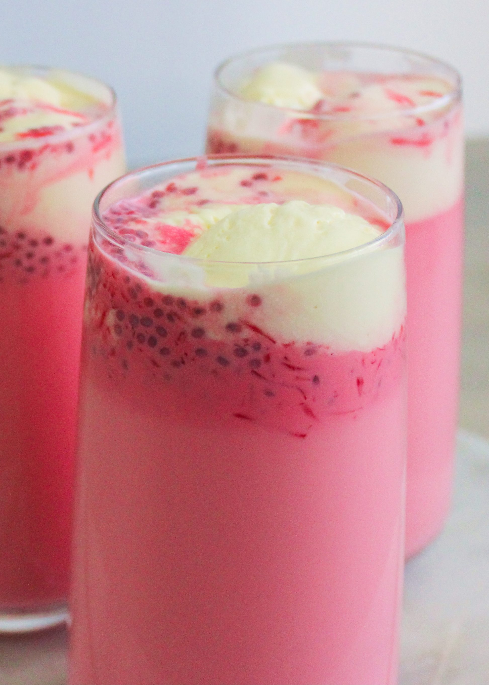

Chef Lacaza
Recipe
About
Alouda Sorbet Recipe
A refreshing and creamy drink perfect for warm days.

Ingredients
7 g Agar agar
200 ml Water
1 tbsp Raw sugar
3 tbsp Casa-casa (basil seeds) or chia seeds
375 ml Condensed milk
750 ml Milk
¼ tsp Almond essence
Rose pink food coloring
Instructions
A day prior...
Place agar agar in a saucepan with 200ml cold water and let it settle for 2 hours.
Heat over medium heat, stirring until agar agar dissolves completely.
Add 2 tbsp raw sugar and bring to a boil until the sugar fully dissolves.
Transfer to a dish, let it cool, and refrigerate overnight until it sets.
Cooking day...
Shred the agar agar mousse using a grater and set aside.
Place basil seeds in a bowl, remove bad seeds, and soak in 8 cups of cold water for 30 minutes.
Once seeds expand, stir in condensed milk, milk, and agar agar mousse gratings.
Add almond essence and 3 drops of rose pink food coloring, then mix well.
Refrigerate and serve chilled over ice.